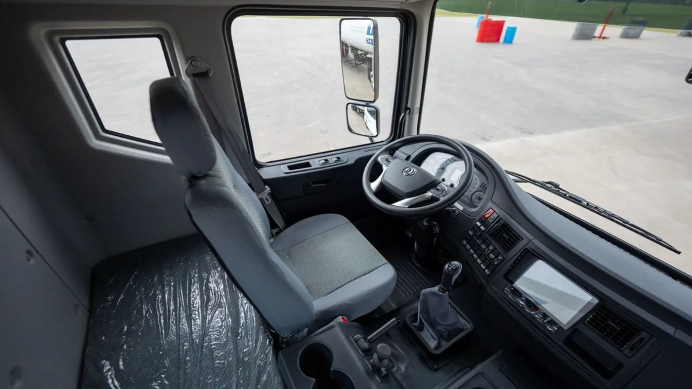

Dongfeng Argentina anunció el 26 de agosto la incorporación del Captain D 1830 Tractor, una variante 4x2 para trabajar con semirremolques. La marca, representada en el país por Magma Automotive, amplía así una familia que hasta ahora contaba con la versión chasis en este escalón de potencia.
La propuesta apunta al transporte de cargas generales, logística, distribución regional y materiales industriales. Su foco es la media distancia, donde el volumen por viaje, la capacidad de arrastre, el consumo y la facilidad de operación deben mantener un equilibrio.
Motor y transmisión
El conjunto mecánico utiliza el conocido Cummins ISD300-50, un diésel de seis cilindros y 6,7 litros que cumple la norma Euro V. Entrega 300 hp y 1.100 Nm. Se combina con una caja manual FAST EATON de nueve velocidades.
La cantidad de relaciones permite escalonar mejor el esfuerzo entre arranque, tránsito urbano y velocidad de ruta. En un tractor de potencia media, seleccionar la marcha correcta es fundamental para mantener el motor dentro de una zona eficiente, especialmente con pendientes o carga elevada.
La ficha difundida por la marca informa una capacidad máxima de tracción de 38.000 kg. Esa cifra describe el límite técnico del conjunto, pero la carga legal depende de la configuración del semirremolque, la distribución por ejes y la normativa vigente para el recorrido.
Un desarrollo pedido para el mercado local
Medios especializados señalaron que la configuración tractor fue solicitada por la operación argentina. El producto existía dentro de las posibilidades de desarrollo de Dongfeng, pero no formaba parte de su producción habitual. La filial identificó una demanda para semirremolques de media distancia y promovió su incorporación.
Ese dato ayuda a entender su posicionamiento. No busca reemplazar a un pesado de larga distancia de gran potencia, sino ocupar un espacio entre el camión chasis de distribución y el tractor pesado. Puede ser atractivo cuando el volumen exige semirremolque, pero el peso, la ruta y el ciclo no justifican una unidad mayor.

Cabina y trabajo cotidiano
El modelo incorpora cabina extendida tipo king cab. El equipamiento informado incluye aire acondicionado, levantavidrios eléctricos, cierre centralizado, volante multifunción, control crucero, pantalla multimedia y audio Bluetooth.
La cabina extendida ofrece espacio adicional detrás de los asientos y mejora las condiciones para pausas o jornadas regionales. Antes de decidir una compra conviene comprobar la postura de manejo, regulación del asiento y volante, visibilidad, acceso, aislamiento acústico y espacio real para el equipaje.
El control crucero puede ayudar a sostener una velocidad uniforme en rutas despejadas, pero su uso debe adaptarse al tránsito, la carga y la topografía. La eficiencia final también depende del conductor, la presión de neumáticos y la correcta elección del semirremolque.
Seguridad y control
El Captain D 1830 Tractor equipa frenos ABS y control electrónico de estabilidad ESC. Suma freno de escape, cámara de retroceso, luces diurnas y faros antiniebla delanteros. La marca también informa quinta rueda y conexión para freno de tráiler de fábrica.
El ABS ayuda a conservar capacidad de dirección durante una frenada intensa. El ESC puede intervenir cuando detecta una trayectoria inestable. Ninguno reemplaza una distribución correcta de la carga, neumáticos en buen estado ni el mantenimiento del sistema neumático.
La cámara facilita la aproximación, aunque una maniobra con semirremolque sigue necesitando espejos, verificación del entorno y, cuando corresponde, asistencia desde el exterior.
Qué revisar antes de incorporarlo
- Ciclo de trabajo: peso promedio, kilómetros diarios, porcentaje urbano y pendientes del recorrido.
- Compatibilidad: altura y posición de quinta rueda, perno rey, conexiones de aire y electricidad.
- Relación final: comprobar que la desmultiplicación sea adecuada para la velocidad y carga habituales.
- Consumo real: solicitar una prueba representativa y comparar litros por tonelada transportada.
- Posventa: verificar cercanía del concesionario, stock de filtros, frenos, suspensión y piezas de carrocería.
- Garantía: revisar condiciones, mantenimiento obligatorio y exclusiones del plan de tres años o 200.000 km.
Mantenimiento del conjunto
El motor Cummins y la transmisión manual son soluciones conocidas por muchos talleres, pero cada aplicación requiere filtros, lubricantes, calibraciones e intervalos específicos. Utilizar solamente la referencia visual de una pieza puede provocar errores; lo correcto es trabajar con número de chasis y catálogo técnico.
En la entrega inicial conviene registrar presión de neumáticos, alineación, alturas de suspensión, holgura de quinta rueda y funcionamiento de ABS y ESC. Después de los primeros viajes se deben revisar fijaciones, pérdidas, desgaste irregular y conexiones del semirremolque.
El freno de escape reduce la exigencia de los frenos de servicio, pero no elimina las inspecciones de cintas o pastillas, campanas o discos, pulmones, válvulas y secador de aire. En un conjunto de 38 toneladas, la coordinación entre tractora y remolque es tan importante como la potencia.
Precio, garantía y disponibilidad
Dongfeng confirmó que la unidad ya está disponible en concesionarios oficiales del país con una garantía de tres años o 200.000 kilómetros. Supertruck informó un precio de lanzamiento de 76.990 dólares; como todo valor comercial, debe verificarse al momento de cotizar junto con impuestos, patentamiento y forma de pago.
La garantía extensa es un argumento importante, aunque el costo total debe incluir seguro, consumo, neumáticos, servicios, repuestos y valor de reventa. Para una flota, el mejor camión no es necesariamente el de menor precio inicial, sino el que entrega la productividad prevista con disponibilidad y soporte.
Una nueva alternativa en un segmento competitivo
La llegada del Captain D 1830 Tractor amplía las opciones para empresas que necesitan arrastrar un semirremolque sin saltar directamente a un pesado de mayor potencia. Su combinación de motor Cummins, caja de nueve relaciones y equipamiento de seguridad resulta interesante sobre el papel.
La evaluación decisiva será operativa: consumo con carga, velocidad media, facilidad de mantenimiento y respuesta de la red. Una prueba sobre el recorrido real de la empresa sigue siendo la forma más confiable de saber si esta configuración encaja en el trabajo diario.